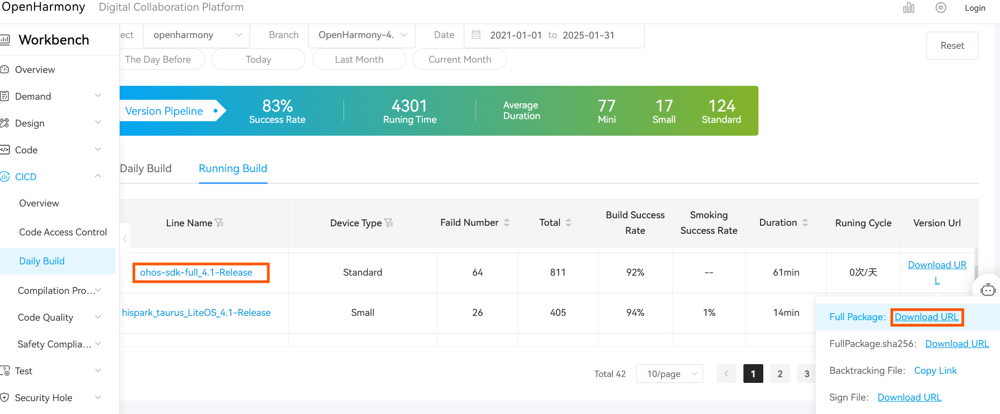

Full SDK & Public SDK
There are two types of SDKs:
- Public-SDK: A toolkit provided for application development. It is available to download with DevEco Studio and does not include high-permission APIs required for system applications.
- Full-SDK: A toolkit provided for OEM manufacturers to develop applications. It cannot be downloaded with DevEco Studio and includes high-permission APIs required for system applications.
How to get the Full SDK?
Approach 1: From CICD pipeline (Recommended)
Get the Full SDK
-
Obtain the latest OpenHarmony SDK from the OpenHarmony daily build pipline [Daily Build OpenHarmony CI](https://ci.openharmony.cn/workbench/cicd/dailybuild/dailylist). The daily build pipeline builds system images, SDKs, etc. Use conditional filtering, such as selecting the project as openharmony, selecting the target branch OpenHarmony-4.1-Release, selecting a date from the previous month, or manually choosing a range.
In the daily build or rolling build, find ohos-sdk-full_4.1-Release, and click on the download link to choose and download the full package, which includes Full-SDK for Windows and Linux. (If daily build SDK is not compatible with your version of DevEco Studio, try to use rolling build SDK instead)

| pipeline | description | remark |
|---|---|---|
| ohos-sdk-public | The public SDK is available for Linux and Windows platforms | It is provided for application developers and does not include system interfaces that require system permissions |
| mac-sdk-public | The public SDK for macOS is available | It is provided for application developers and does not include system interfaces that require system permissions |
| ohos-sdk-full | Applicable to Linux and Windows platforms. If you want to use system APIs, you need to use this SDK. | Available to OEMs, including system interfaces that require access to the system |
| mac-sdk-full | Full SDK for macOS. If you want to use system APIs, you need to use this SDK. | Available to OEMs, including system interfaces that require access to the system |
- Make sure that the downloaded SDK is the full SDK.
Check whether the downloaded file name contains “full-SDK.”
Check if the API includes system APIs such as@ohos.app.ability.abilityManager.d.ts,@ohos.app.form.formInfo.d.ts, and@ohos.bluetooth.d.ts
Replace the Full SDK
Take the replacement of the full SDK of DevEco Studio 4.1, API 11 on Windows OS as an example.
- Backup and remove the local SDK:
Make sure to select OpenHarmony then navigate to the directory where the original SDK is installed.
Copy the entire SDK directory (e.g., 11) to another location on your system where you want to keep the backup.
Now you can remove the original SDK from its directory.
- The SDK you have acquired needs to be recognized by DevEco Studio in order to be used. For example, with the daily build SDK:
version-Master_Version-OpenHarmony_4.1.7.7-20240830_034700-ohos-sdk-public_4.1-release.tar.gz, the compressed file has the following directory structure. You can see that it contains SDK files for both Linux and Windows platforms. Each platform’s SDK includes directories such as ets, js, native, previewer, and toolchains.└─version-Master_Version-OpenHarmony_4.1.7.7-20240830_034700-ohos-sdk-public_4.1-Release │ manifest\_tag.xml │ └─ohos-sdk ├─linux │ ets-linux-x64-4.1.7.8-Release │ js-linux-x64-4.1.7.8-Release │ native-linux-x64-4.1.7.8-Release │ previewer-linux-x64-4.1.7.8-Release │ toolchains-linux-x64-4.1.7.8-Release │ └─windows ets-windows-x64-4.1.7.8-Release js-windows-x64-4.1.7.8-Release native-windows-x64-4.1.7.8-Release previewer-windows-x64-4.1.7.8-Release toolchains-windows-x64-4.1.7.8-Release -
Create a new directory with the API version 11 as the file name in dir path: xxx\Sdk\ , unzip the compressed files into this directory to form a structure below:

- Verify in the IDE:
Full API will be loaded in IDE and you can now rebuild the project.

Full SDK replacement tutorial finished.
Approach 2: From Compiled Source Files
The Full-SDK is not available directly. It can be compiled from the source code of OpenHarmony and manually replaced in DevEco Studio. The method of replacing the SDK is the same as the one mentioned in Approach 1.
You can find the guide of compilation of source code here: How to compile Full SDK
Please use translation tools if needed.